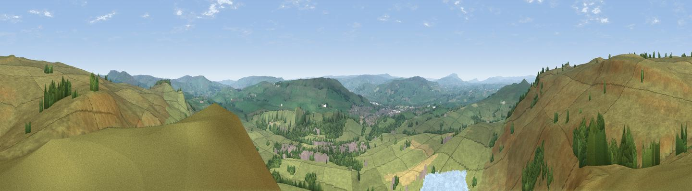

Embsay Crag
#9807 in England · top 11% of its area beats it · near EmbsayWhere it is
The exact computed spot (SE 00450 55125). Click the marker for map links.
The view, rendered

A 360° render of this exact spot computed from the terrain model, tree cover and land cover — summer colours, afternoon light, calibrated against photographs of famous viewpoints. Real trees, hedges and buildings will differ in detail.
The panorama
Grey silhouette: terrain skyline in each direction (720 bearings, Earth curvature and refraction included). Dashed green: skyline with trees (+15 m) and buildings (+8 m) as obstacles. Blue strip: how far the ground is visible on each bearing.
Where the view opens
Wedge length = distance to the farthest visible ground on that bearing (vegetation-aware). Rings at 10, 25 and 50 km.
What fills the view
86% grassland · 8% woodland · 3% water · 2% built-up · 1% cropland
Angular shares of the visible panorama (visual magnitude), not map area. Landscape diversity 0.24 (0–1 Shannon).
Key numbers
More beautiful places nearby
The staircase of upgrades: each row has a higher view potential than everything closer. Driving times are estimates from straight-line distance, calibrated against real road routing — check an actual route before setting out.
| Place | Direction | Drive | Score |
|---|---|---|---|
| Viewpoint near Embsay | WNW · 2 km | ~5 min | 74.5 |
| Cracoe Fell | NNW · 4 km | ~9 min | 75.1 |
| Viewpoint near Bewerley | NE · 15 km | ~27 min | 75.7 |
| Viewpoint near Bewerley | NE · 15 km | ~27 min | 76.8 |
| Viewpoint near Otley | ESE · 22 km | ~37 min | 77.5 |
| Little Ingleborough | NW · 32 km | ~49 min | 78.8 |
| Viewpoint near Ingleton | NW · 33 km | ~50 min | 79.5 |
| Whernside | NW · 37 km | ~56 min | 79.9 |
53.99217, -1.99463 · source: osm peak · position refined by local search. Computed location — check access rights before visiting.